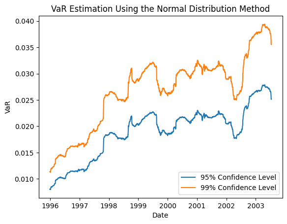
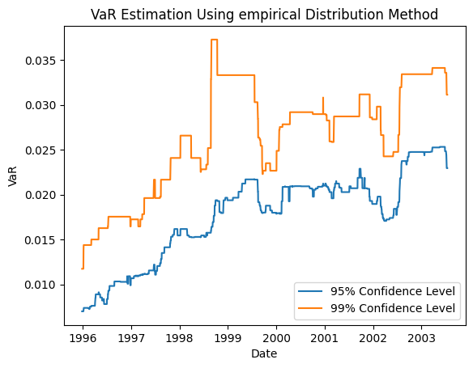
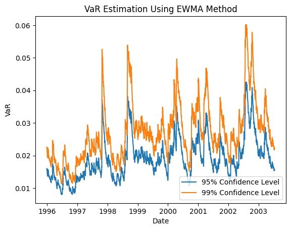
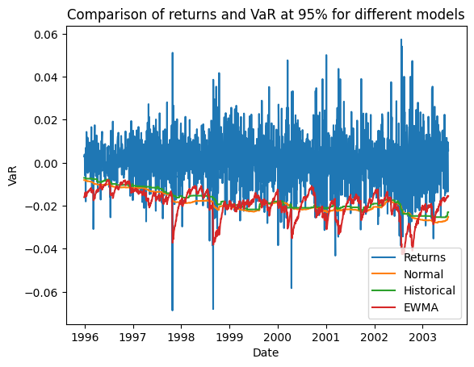
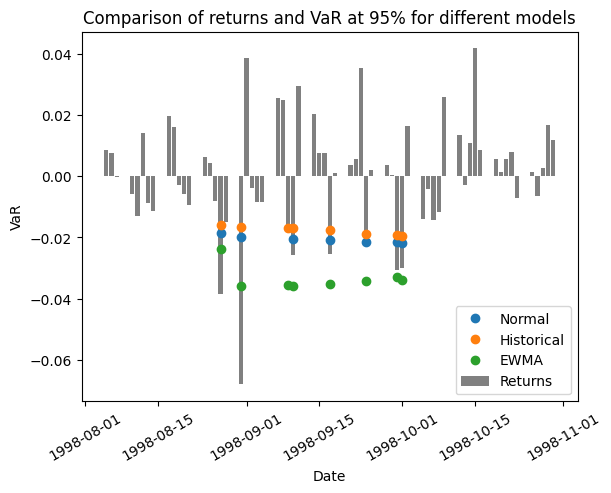

from datetime import datetime
import matplotlib.pyplot as plt
import numpy as np
import pandas as pd
Value At Risk (VaR)
df = pd.concat((pd.read_excel("data/dateReturns.xlsx", header=None, names=['date']),
pd.read_excel("data/Returns.xlsx",header=None, names=['return'])), axis=1)
estimation_win_size = 250
win_start = min(df[df['date']>='1995-1-1'].index)
win_start = min(df[df['date']>='1995-12-29'].index)
df| date | return | |
|---|---|---|
| 0 | 1993-04-28 | 0.000023 |
| 1 | 1993-04-29 | 0.001986 |
| 2 | 1993-04-30 | 0.002962 |
| 3 | 1993-05-03 | 0.005157 |
| 4 | 1993-05-04 | 0.003594 |
| ... | ... | ... |
| 2659 | 2003-07-08 | 0.003405 |
| 2660 | 2003-07-09 | -0.005586 |
| 2661 | 2003-07-10 | -0.013480 |
| 2662 | 2003-07-11 | 0.009548 |
| 2663 | 2003-07-14 | 0.005731 |
2664 rows × 2 columns
import VaR as var
SUBTRACT_MEAN = False
def normal_est(x,z,p,s):
sigma = np.std(x, ddof=1)
return - z[0]*sigma, - z[1]*sigma, sigma
def empirical_est(x, z, p, s):
return abs(np.quantile(x, p[0])), abs(np.quantile(x, p[1])), None
s2tmp=[]
rettmp=[]
def ewma_est(x, z, p, s):
lmbda = 0.94
initvar = 1e-4
r_prev = x.iloc[-1]
if len(s)==0:
sigma2 = (1-lmbda)*r_prev**2 + lmbda*initvar
else:
sigma2 = (1-lmbda)*r_prev**2 + lmbda*s[-1]**2
s2tmp.append(sigma2)
rettmp.append(r_prev)
sigma = sigma2**0.5
return - z[0]*sigma, - z[1]*sigma, sigma
normal95, normal99, sigma, dates, ret = var.est_var(normal_est, SUBTRACT_MEAN, win_start, df, estimation_win_size)
emp95, emp99, sigma, dates, ret = var.est_var(empirical_est, SUBTRACT_MEAN, win_start, df, estimation_win_size)
ewma95, ewma99, sigma, dates, ret = var.est_var(ewma_est,SUBTRACT_MEAN, win_start, df, estimation_win_size)var.plot(plt, normal95, normal99, dates,
'VaR Estimation Using the Normal Distribution Method')
var.plot(plt, emp95, emp99, dates,
'VaR Estimation Using empirical Distribution Method')
var.plot(plt, ewma95, ewma99, dates,
'VaR Estimation Using EWMA Method')



plt.plot(dates, ret)
plt.plot(dates, -normal95)
plt.plot(dates, -emp95)
plt.plot(dates, -ewma95)
# ylabel('VaR')
plt.ylabel('VaR')
# xlabel('Date')
plt.xlabel('Date')
# legend({'95% Confidence Level','99% Confidence Level'},'Location','Best')
plt.legend(['Returns','Normal','Historical','EWMA'], loc="lower right")
# title('VaR Estimation Using the Normal Distribution Method')
plt.title('Comparison of returns and VaR at 95% for different models')
plt.show()
indnorm95 = ret<-normal95
ind_emp95 = ret<-emp95
ind_ewma95 = ret<-ewma95
d_norm95 = dates[indnorm95]
d_emp95 = dates[ind_emp95]
d_ewma95 = dates[ind_emp95]
breach_norm95 = -normal95[indnorm95]
breach_emp95 = -emp95[ind_emp95]
breach_ewma95 = -ewma95[ind_emp95]
def zoom(d):
boolind = (d>=datetime(1998,8,5))*(d<=datetime(1998,10,31))
return boolind
plt.cla()
plt.plot(d_norm95[zoom(d_norm95)], breach_norm95[zoom(d_norm95)], "o")
plt.plot(d_emp95[zoom(d_emp95)], breach_emp95[zoom(d_emp95)], "o")
plt.plot(d_ewma95[zoom(d_ewma95)], breach_ewma95[zoom(d_ewma95)], "o")
plt.bar(dates[zoom(dates)], ret[zoom(dates)], color ='gray' )
# ylabel('VaR')
plt.ylabel('VaR')
# xlabel('Date')
plt.xlabel('Date')
# legend({'95% Confidence Level','99% Confidence Level'},'Location','Best')
plt.legend(['Normal','Historical','EWMA','Returns'], loc="lower right")
# title('VaR Estimation Using the Normal Distribution Method')
plt.title('Comparison of returns and VaR at 95% for different models')
plt.xticks(rotation=30)
plt.show()
from scipy import stats
def test_var(breaches, ret, p, name):
x = len(breaches)
N = len(ret)
Z = (x - N*p)/((N*p*(1-p))**0.5)
cdf_norm = stats.norm.cdf(Z)
print(f"Name: {name}")
print(f"Observed probability of breach: {x/N}")
cdf_binom = stats.binom.cdf(x, N, p)
print(f"probability of observing {x} or fewer breaches, out of {N} observations, if the true probability is {p}: {cdf_binom}\n")
print(f"Normal test: {cdf_norm}")
if cdf_binom<0.95:
print('Green light\n\n')
elif cdf_binom<0.9999:
print('Yellow light\n\n')
else:
print('Red light\n\n')
test_var(breach_norm95, ret, 0.05, 'Normal distribution')
test_var(breach_emp95, ret, 0.05, 'Empirical distribution')
test_var(breach_ewma95, ret, 0.05, 'EWMA distribution')Name: Normal distribution
Observed probability of breach: 0.05134722928317234
probability of observing 101 or fewer breaches, out of 1967 observations, if the true probability is 0.05: 0.6329597720940605
Normal test: 0.6080174200013403
Green light
Name: Empirical distribution
Observed probability of breach: 0.058973055414336555
probability of observing 116 or fewer breaches, out of 1967 observations, if the true probability is 0.05: 0.9672557035871664
Normal test: 0.9660732704629765
Yellow light
Name: EWMA distribution
Observed probability of breach: 0.058973055414336555
probability of observing 116 or fewer breaches, out of 1967 observations, if the true probability is 0.05: 0.9672557035871664
Normal test: 0.9660732704629765
Yellow light
test_var(np.ones(100), np.ones(2000), 0.05, 'Normal distribution')Name: Normal distribution
Observed probability of breach: 0.05
probability of observing 100 or fewer breaches, out of 2000 observations, if the true probability is 0.05: 0.5265709385410947
Normal test: 0.5
Green light